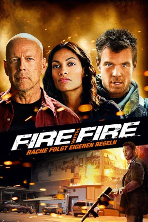

gesehen am 22.06.2016
gesehen am 22.06.2016Alternativ: Fire with Fire gesehen am 22.06.2016
 
 IMDB-Wertung: 5.7 / 10
IMDB-Wertung: 5.7 / 10  Metascore:
Metascore: 
Der Feuerwehrmann Jeremy Coleman wird Zeuge, wie ein Gemischtwarenhändler und dessen Sohn einem brutalen Anschlag zum Opfer fallen. Er selbst kommt nur ganz knapp mit dem Leben davon. Doch damit ist die Gefahr noch längst nicht vorbei, im Gegenteil, der Albtraum hat gerade erst begonnen. Er wird dazu gezwungen, gegen den Verbrecherfürsten Neil Hagan auszusagen und dafür kommt er in ein Zeugenschutzprogramm, das unter der Aufsicht der U.S. Marshalls steht. Jeremy erhält eine neue Identität, die allerdings schnell auffliegt, wodurch er wieder ins Visier der Gangster gerät. Daraufhin beginnt er, die Dinge selbst in die Hand zu nehmen. Schließlich steht nicht nur sein Leben auf dem Spiel, sondern auch das seiner Freundin.
Jahr: 2012
Dauer: 97 Minuten
FSK: 18
Land: USA Studio: Grindstone Entertainment GroupTonspuren: DTS - ,
Untertitel:
Auflösung: 1080p (1920x808) Größe: 4792 MB
Genre: Action, Thriller, Drama, Krimi
Regisseur: David Barrett
Drehbuch: Simon Hauschild
Soundtrack:
Darsteller:
 Josh Duhamel als Jeremy Coleman
Josh Duhamel als Jeremy Coleman Bruce Willis als Mike Cella
Bruce Willis als Mike Cella Rosario Dawson als Talia Durham
Rosario Dawson als Talia Durham Vincent D'Onofrio als David Hagan
Vincent D'Onofrio als David Hagan 50 Cent als Lamar
50 Cent als Lamar Julian McMahon als Robert
Julian McMahon als Robert Vinnie Jones als Boyd
Vinnie Jones als Boyd Arie Verveen als Darren
Arie Verveen als Darren Bonnie Somerville als Karen Westlake
Bonnie Somerville als Karen Westlake Richard Schiff als Harold Gethers
Richard Schiff als Harold Gethers Yohance Myles als Deputy Parker
Yohance Myles als Deputy Parker Quinton 'Rampage' Jackson als Wallace
Quinton 'Rampage' Jackson als Wallace Kevin Dunn als Agent Calvin Mullens
Kevin Dunn als Agent Calvin Mullens Danny Epper als Sean
Danny Epper als Sean Scott A. Martin als Kane
Scott A. Martin als Kane Anthony Michael Frederick als Bar Owner
Anthony Michael Frederick als Bar Owner Christopher Berry als CSU Tech
Christopher Berry als CSU Tech Lydia Hull als Hotel Clerk
Lydia Hull als Hotel Clerk Han Soto als Street Cop
Han Soto als Street Cop John L. Armijo als Police Officer
John L. Armijo als Police Officer Thom Barry als Dennis
Thom Barry als Dennis Trace Cheramie als Arayan #2
Trace Cheramie als Arayan #2 Donna Duplantier als Airline gate
Donna Duplantier als Airline gate Jeff Galpin als Arayan #1
Jeff Galpin als Arayan #1 Douglas M. Griffin als Eigths Crime Scene Cop
Douglas M. Griffin als Eigths Crime Scene Cop Robert Larriviere als WITSEC Marshall
Robert Larriviere als WITSEC Marshall Brian Oerly als Arayan #3
Brian Oerly als Arayan #3 Bill Stinchcomb als Motel Cop #1
Bill Stinchcomb als Motel Cop #1 Jordan Sudduth als Parking Lot Painter
Jordan Sudduth als Parking Lot Painter Julie Ann Doan als Crime Scene Observer , uncredited
Julie Ann Doan als Crime Scene Observer , uncredited Michael Wozniak als Prison Sheriff , uncredited
Michael Wozniak als Prison Sheriff , uncredited Tim Bell als Arayan #7
Tim Bell als Arayan #7Datei: X:\FSK18-2012\Fire with Fire - Rache folgt eigenen Regeln (2012, FSK18, 1920x808).mkv seit 20.06.2016
Festplatte: FSK18
 Es gibt insgesamt 26 Filme in der Gruppe 'FSK18-2012'
Es gibt insgesamt 26 Filme in der Gruppe 'FSK18-2012'